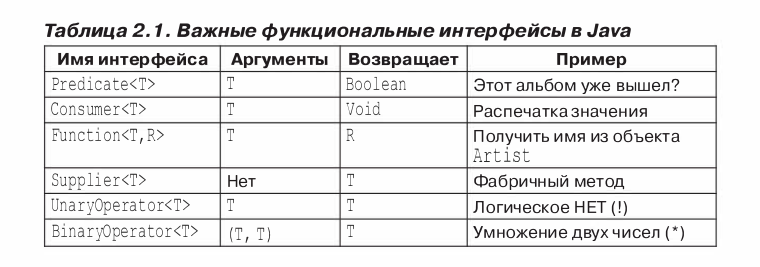

Лямбда выражения пришли в JAVA из функционального программирования. С их помощью мы можем быстро без помощи Анонимных класов реализовать инферфейс. По реализации это Интерфейс с одним Абстрактным методом, но также может содержать default и static методы. Можно использовать @FunctionalInterface который будет следить при компиляции чтобы Интерфейс соответствовал условия Функционального Интерфейса.
